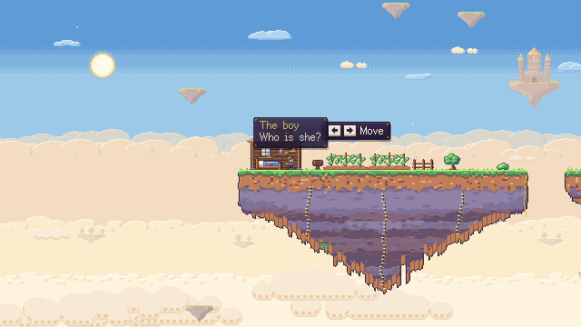
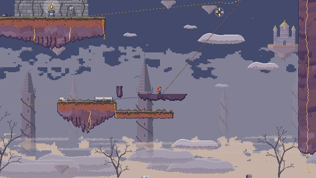
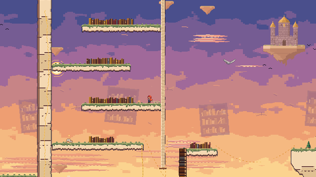
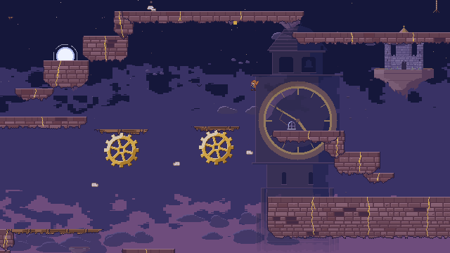
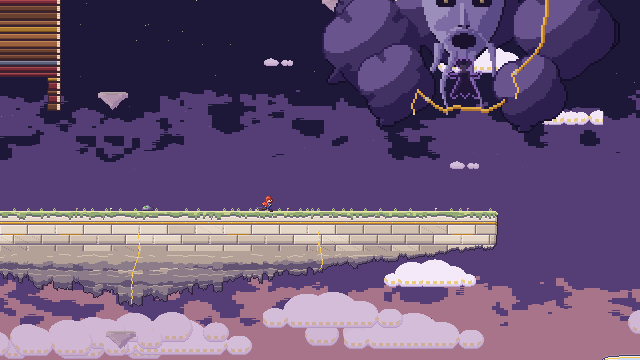

What is in the game
- Seven levels. The first five castles each give you a relic with a new way to move: the Glide Cloak, the Leaping Bracers (a double jump), the Twin Doors, the Mirror Shield and Roland's Rope. The next level opens with a safe place to try it, and the last level asks for all of them.
- Falling costs little: you come back near the last solid ground you stood on.
- Few hints on screen. The level itself and a line of golden stitching show the way.
- Eleven small knots off the main route. Find all the knots in a level and a gold thread joins them on the level select; find all eleven and your cloak gets a gold edge.
- All the art is drawn in code. Music by Kevin MacLeod.
- Your best time for each level is kept.
- Accessibility settings: dialogue that waits for a key, glide as a toggle instead of a hold, game speed at 85% or 70%, and separate volumes for music and sound effects.
Controls
| Keyboard | Gamepad | |
| Move | ← → or A D | Stick or D-pad |
| Jump, hold to go higher | Space | A |
| Glide, hold in the air | Shift | X |
| Back to solid ground | R | Back |
| Pause | Esc | Start |
Later relics use keys you already know, or work when you touch the right thing; the game explains each one when you get it. On a phone held sideways, the stick is at the bottom left, jump and glide at the bottom right, restart and pause at the top right.